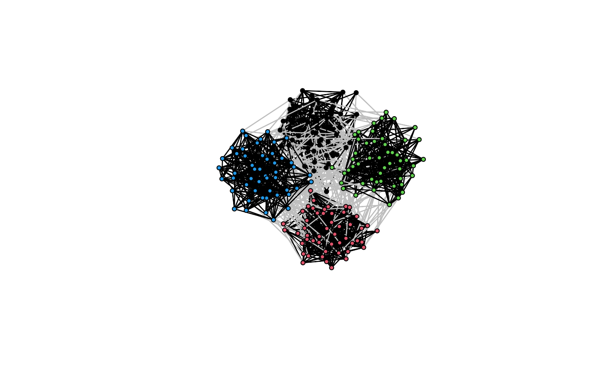
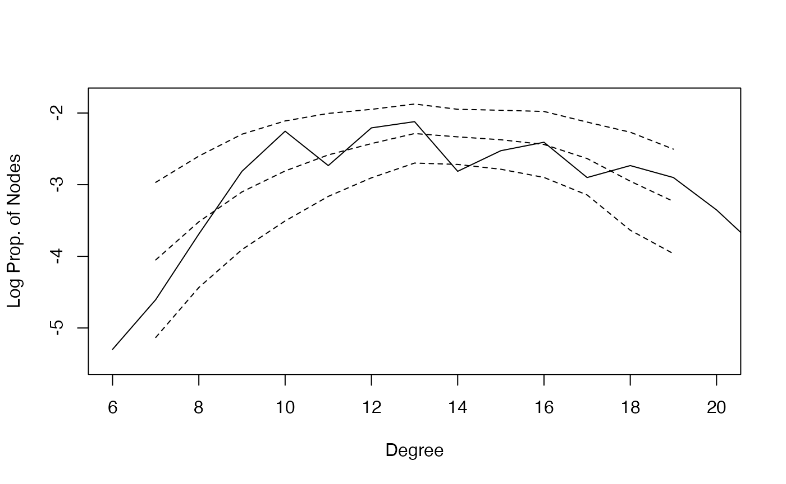
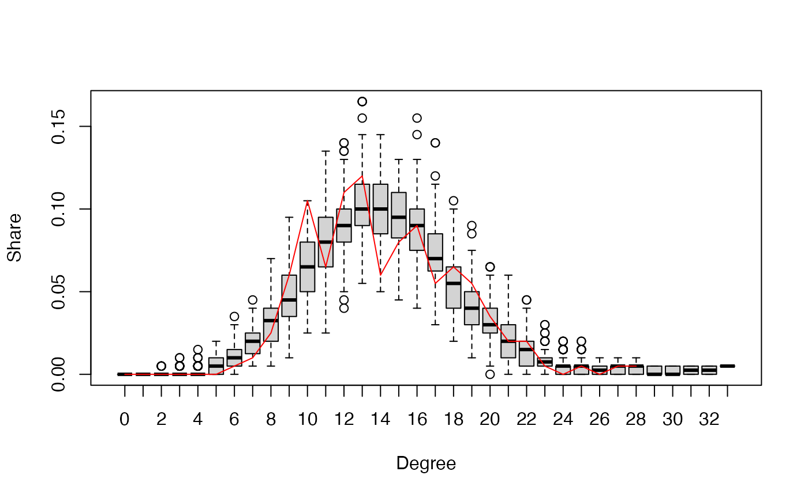
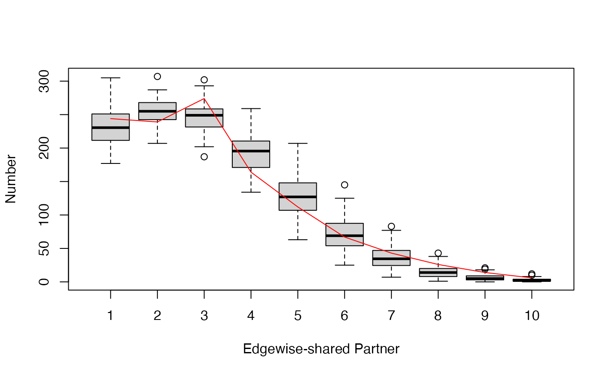
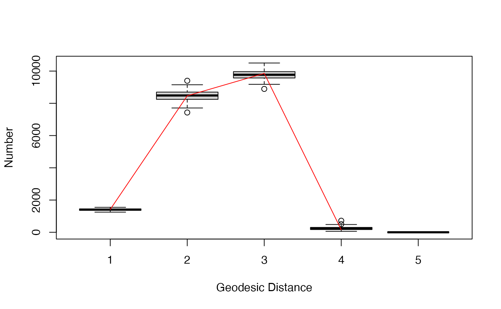
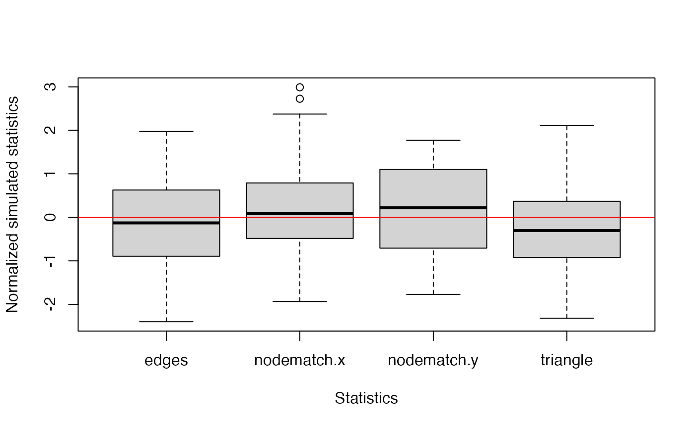

An Introduction to Estimating Exponential Random Graph Models for Large Networks with `bigergm`
bigergm.RmdThis vignette briefly introduces how to use the R package
bigergm, which estimates Hierarchical Exponential-Family
Random Graph Models (HERGMs, Schweinberger and
Handcock 2015). The package bigergm builds on the R
packages lighthergm (MartÃnez
Dahbura et al. 2021) and hergm (Schweinberger and Luna 2018) and applies
scalable algorithms to scale the estimation up to big networks with up
to 50 K population members (see MartÃnez Dahbura
et al. (2021) and Fritz et al.
(2024)).
Exponential Random Graph Models for Large Networks
Exponential Random Graph Models (ERGMs) are a popular class of models for network data. They model the probability of observing a network as a function of network statistics, such as the number of edges and triangles. ERGMs are commonly employed in social network analysis but have some limitations when applied to large networks. The main limitation is that the likelihood function is intractable for large networks, making it difficult to estimate the model parameters. At the same time, larger networks warrant more complex models to capture the underlying structure of the network.
To address these limitations, bigergm implements a
scalable algorithm for estimating HERGMs, which generalize ERGMs that
allow for local dependence induced by non-overlapping blocks of nodes
with network data. Introduced by Schweinberger
and Handcock (2015), complex dependence is allowed only between
nodes within the same block. Thereby, we obtain a more flexible model
that can capture the cohesive subgroups in the network globally while
accounting for dependence within these subgroups on the local level.
Model Specification
Consider a network of
population members encompassed in the set
.
Define the adjacency matrix corresponding to this network as
,
where
is the entry in the
-th
row and
-th
column of the matrix. If
,
nodes
and
are connected; otherwise, they are not connected. In this vignette we
only regard undirected networks, thus the adjacency matrix is symmetric,
i.e.,
.
Note, however, that the package bigergm also supports
directed networks. The number of blocks is denoted as
and
is the block membership matrix with entries
equal to 1 if node
belongs to block
and 0 otherwise. Let
be the submatrix of
of the connections between blocks
and
,
i.e., the matrix including the connections between population members
and
with
.
The submatrix
of
contains the connections within block
,
i.e., the matrix including the connections between population members
and
with
.
Let
be a matrix of nodal covariates, where
is the number of covariates and
refers to the
th
nodal covariate of population member
.
For the context of bigergm, assume that all nodal
covariates are categorical. Generally, we refer to random variables by
capitalized letters and their realizations by lowercase letters.
Given this notation, the probability of observing the network for a given the block membership matrix is given by: where is the probability of observing the edges between blocks and given and is the probability of observing the edges within block given . The parameter vectors and are the coefficients of the between-block and within-block networks, respectively. How these two models are specified is sketched in the next two paragraphs.
Between-block Model
For the probability model for edges between population members of blocks and , we employ a network model assuming dyadic independence between the edges:
where
is the probability distribution of a
Bernoulli distribution with parameter
evaluated at
.
The parameter
is the probability of observing an edge between nodes
and
with
and have different forms:
- For the standard Stochastic Block Model (SBM), the probability of observing an edge between nodes and is given by .
- Extending this simplistic model, the current implementation allows
the usage of
nodematchstatistics to include the nodal covariates in the model, implying the following probability for with :
where all parameters ( and for ) can vary for each pair of blocks and .
Within-block Model
The probability of observing the edges within block is modeled as a function of network statistics, such as the number of edges or triangles within block . We specify the within-block networks as exponential-family random graph models: where is a vector of sufficient statistics counting, e.g., the edges within block and is a normalizing constant guaranteeing that the probability distribution sums to one. Examples of network statistics include the number of edges, triangles, and degree statistics (see Morris, Handcock, and Hunter (2008) and all references therein).
Estimation
Since the block membership matrix is usually unobserved, we estimate it. Therefore, we assume that the now random block membership matrix is a latent variable and following a multinomial distribution: where is the marginal probability that a node belongs to block for . Given this context, the model is estimated in two steps by the algorithm proposed by Babkin, Stewart, and Schweinberger (2020):
- Recover the block membership matrix by maximizing a lower bound of the likelihood from the observed network (see Babkin, Stewart, and Schweinberger (2020) and Vu, Hunter, and Schweinberger (2013) for details).
- Given the estimated block membership matrix
,
estimate the coefficients
and
by maximizing the pseudo-likelihood of the observed network
.
The pseudo-likelihood of the observed network
given the estimated block membership matrix
is equivalent to the likelihood of a logistic regression model and can,
therefore, be estimated by standard optimization algorithms. For this
step, the entire computational machinery implemented in the
ergmpackage is used.
However, note that the first step is unnecessary if the block membership matrix is known.
The package bigergm implements a scalable algorithm for
estimating HERGMs even for large networks by exploiting the structure of
the model and the network data (details are provided in MartÃnez Dahbura et al. (2021) and Fritz et al. (2024)).
Installation
You can install the CRAN version of bigergm by running
the following command:
install.packages("bigergm")A simple example
Let’s start with a simple example using the toy network included in the package. The toy network is a small network with a clear community structure, which is helpful for testing the package.
# Load the network object.
data(toyNet)
# Plot the network.
plot(toyNet, vertex.col = rep(c("tomato", "steelblue", "darkgreen", "black"),
each = toyNet$gal$n/4))
It is visible that this network has a cluster or community structure. Although this is an artificial network, we often observe such community structures in real-world social networks. Exploiting this stylized fact, we model the way population members in a network get connected differently for connections across and within communities:
- Connections across communities happen by luck, influenced by homophily
- Connections within communities also consider interdependencies among links. For example, the probability that population members and get connected may be influenced by a third population member .
To estimate an Exponential Random Graph model with local dependence,
we first need to specify the model formula that specifies the model. As
described in the previous section, the model consists of two parts: the
between-block model and the within-block model. To ease this step, both
parts are specified in one formula very similar to specifying a model in
ergm::ergm(). All terms that induce dependence are excluded
from the between block model, while the within block model includes all
terms. In the following example, we include the number of edges, the
number of triangles, and nodematch statistics for the nodal covariates
x and y in the model.
model_formula <- toyNet ~ edges + nodematch("x") + nodematch("y") + triangleAssuming that covariate ‘x’ is the first and covariate ‘y’ is the second covariate, the probability of observing with is specified by: and the sufficient statistics of the within-block model are:
We can estimate the specified model with the bigergm()
function, which takes the following parameters:
object: A formula specifying the model to estimate (as detailed in the previous paragraph). Seehelp(bigergm)for how providing a fittedbigergmobject can be used to continue the estimation.clustering_with_features: boolean value set to TRUE, if the algorithm should consider nodal covariates in the first step of the estimation.n_blocks: Number of blocks to recover (in the above explanations, ).n_MM_step_max: Maximum number of MM algorithm steps.tol_MM_step: Threshhold when convergence is reached. Following Vu, Hunter, and Schweinberger (2013), we stop the algorithm when the relative change in the lower bound of the objective function is less thantol_MM_step.estimate_parameters: boolean value set to TRUE, if the algorithm should estimate the parameters after the block recovery step.check_block_membership: boolean value set to TRUE, if the algorithm should keep track of block memberships at each MM iteration.
There are other parameters that you can specify, which are detailed
in the documentation (see help(bigergm)).
res <-bigergm(
# The model you would like to estimate
object = model_formula,
# The number of blocks
n_blocks = 4,
# The maximum number of MM algorithm steps
n_MM_step_max = 100,
# The tolarence for the MM algorithm
tol_MM_step = 1e-6,
# Perform parameter estimation after the block recovery step
estimate_parameters = TRUE,
# Indicate that clustering must take into account nodematch on characteristics
clustering_with_features = TRUE,
# Keep track of block memberships at each EM iteration
check_block_membership = TRUE,
# Name the heuristic algorithm used for initializing the block memberships
initialization = "walktrap"
)We can plot the estimated the objective function of the first estimation step recovering the latent community structure over iterations. This allows us to check whether this step has converged.
plot(1:length(res$MM_lower_bound),
res$MM_lower_bound, type = "l", xlab = "Iterations", ylab = "Lower Bound")
The result indicates that the clustering step converged at the early
stage. Note that the number of iterations you need to perform
(n_MM_step_max) varies depending on the network’s size and
clarity in community structure. The convergence of the lower bound does,
however, not guarantee the convergence of the clustering step to a
unique maximizer. Therefore, restarting the algorithm with different
initializations may be advisable in practice.
You can check the clustering result by plotting the network with nodes colored by the estimated block membership. The edges are grey if the two population members are from different blocks and black otherwise.
plot(res)
The parameter estimates of
and
may be inspected using the summary() function.
# For the between networks
summary(res$est_between)
#> Results:
#>
#> Estimate Std. Error MCMC % z value Pr(>|z|)
#> edges -4.21749 0.07482 0 -56.369 <1e-04 ***
#> nodematch.x 0.78273 0.16144 0 4.848 <1e-04 ***
#> nodematch.y 0.38854 0.18433 0 2.108 0.035 *
#> ---
#> Signif. codes: 0 '***' 0.001 '**' 0.01 '*' 0.05 '.' 0.1 ' ' 1
#>
#> Warning: The standard errors are based on naive pseudolikelihood and are suspect. Set control.ergm$MPLE.covariance.method='Godambe' for a simulation-based approximation of the standard errors.
#>
#> Null Pseudo-deviance: 2576 on 8 degrees of freedom
#> Residual Pseudo-deviance: 2551 on 5 degrees of freedom
#>
#> AIC: 2557 BIC: 2558 (Smaller is better. MC Std. Err. = NA)
# For the within networks
summary(res$est_within)
#> Call:
#> ergm::ergm(formula = within_formula, offset.coef = offset.coef,
#> estimate = method, control = control)
#>
#> Maximum Pseudolikelihood Results:
#>
#> Estimate Std. Error MCMC % z value Pr(>|z|)
#> edges -1.80056 0.06660 0 -27.036 <1e-04 ***
#> nodematch.x 0.86683 0.10351 0 8.375 <1e-04 ***
#> nodematch.y 0.96478 0.10368 0 9.305 <1e-04 ***
#> triangle 0.14615 0.01744 0 8.382 <1e-04 ***
#> ---
#> Signif. codes: 0 '***' 0.001 '**' 0.01 '*' 0.05 '.' 0.1 ' ' 1
#>
#> Warning: The standard errors are based on naive pseudolikelihood and are suspect. Set control.ergm$MPLE.covariance.method='Godambe' for a simulation-based approximation of the standard errors.
#>
#> Null Pseudo-deviance: 6793 on 4900 degrees of freedom
#> Residual Pseudo-deviance: 5154 on 4896 degrees of freedom
#>
#> AIC: 5162 BIC: 5188 (Smaller is better. MC Std. Err. = 0)Currently, only nodematch() terms are supported as a way
to include covariates in the model.
Simulation
You can simulate networks with local dependence by using
bigergm () and simulate_bigergm() functions.
The simulate.bigergm() function is a wrapper around the
simulate_bigergm() function for a particular fitted
bigergm object. To apply the
simulate.bigergm() function, you only need to provide the
fitted bigergm object.
simulate(res, seed = 1)
#> Network attributes:
#> vertices = 200
#> directed = FALSE
#> hyper = FALSE
#> loops = FALSE
#> multiple = FALSE
#> bipartite = FALSE
#> total edges= 1464
#> missing edges= 0
#> non-missing edges= 1464
#>
#> Vertex attribute names:
#> block vertex.names x y
#>
#> Edge attribute names not shownThe simulate_bigergm() function allows you to simulate
networks with local dependence from scratch. The function requires
coefficients for the between and within connections, the formula for the
model, the number of simulations to return, and the output format.
Depending on the output format, the function returns a list with the
network statistics for the between and within connections, the adjacency
matrix of the simulated network, or the network object itself.
sim_net <- bigergm::simulate_bigergm(
formula = model_formula,
# The coefficients for the between connections
coef_between = res$est_between$coefficients,
# The coefficients for the within connections
coef_within = res$est_within$coefficients,
# Number of simulations to return
nsim = 1,
# If `stats` a list with network statistics
# for the between and within connections is returned
output = "network"
)After simulating the network, you can plot it to assess whether the community structure is preserved.
plot(sim_net)
Goodness-of-fit
Following the estimation, consider evaluating the goodness-of-fit of
the model. In line with the ERGM literature, we provide a
goodness-of-fit assessment that evaluates how good simulations from the
model fit the observed network. We provide a function gof()
to carry out this task:
gof_res <- gof(
# The object returned by bigergm::bigergm()
object = res,
# The number of simulations to use
nsim = 100,
# Compute the geodesic distance for the observed and each simulated network
compute_geodesic_distance = TRUE,
# Set a seed for reproducibility
seed = 1234,
# Start at the observed network
start_from_observed = TRUE, type = "within",
# The control parameters for the simulation
control_within = ergm::control.simulate.formula(MCMC.burnin = 1000, MCMC.interval = 1000)
)The parameter control_within is used to control the MCMC
simulation carried out to simulate from the model. For details we refer
to help(ergm::control.simulate.formula). The function
evaluates the following metrics for a hundred simulated and observed
networks:
network statistics used in the fit or formula provided,
normalized network statistics (the network statistics normalized around the observed statistics),
degree distribution,
geodesic distance, and
edgewise shared partners.
The function bigergm::gof_bigergm() returns a list of
data frames for these matrices, allowing you to create plots that match
your needs flexibly. Below is an example plot for the degree
distribution on the log scale.
degree_gof <-
gof_res$simulated$degree_dist %>%
dplyr::group_by(degree) %>%
dplyr::summarise(log_mean_share = mean(log(share)),
log_sd_share = sd(log(share))) %>%
dplyr::ungroup()
plot(degree_gof$degree, degree_gof$log_mean_share,
xlab = "Degree", ylab = "Log Prop. of Nodes",
ylim = c(-5.5,-1.8), xlim = c(6,17), type = "l", lty = 2)
lines(degree_gof$degree, degree_gof$log_mean_share+ 1.96 * degree_gof$log_sd_share, type = "l", lty = 2)
lines(degree_gof$degree, degree_gof$log_mean_share- 1.96 * degree_gof$log_sd_share, type = "l", lty = 2)
tmp_info <- gof_res$original$degree_dist %>%
dplyr::filter(share > 0 & degree < 22)
lines(tmp_info$degree, log(tmp_info$share), lty = 1)
Alternatively, you can use the plot() function to
visualize the goodness-of-fit results. Three plots are generated
checking whether the estimated model can adequately capture the degree
distribution, edgewise-shared partner distribution, and geodesic
distances of the observed network. In a fourth plot, the simulated
network statistics are plotted normalized around the observed
statistics. For a good fit, all values should be around zero. In all
plots, the red line represents the observed network, and the boxplot
represents the simulated networks.
plot(gof_res)
When you work with large networks
If you would like to estimate an bigergm with a large network (say, when the number of nodes 50,000):
- Select features sparse enough to fit into memory. Covariates such as gender or race will be too dense to construct feature matrices. This is a non-negligible limitation of our algorithm and will be solved in the future.
- Use Python’s infomap to initialize clusters. This is because it is
much faster to implement cluster initialization than R functions such as
igraph::cluster_infomap(). Setuse_infomap_python = TRUEinbigergm::bigergm(). - When the MM estimation does not seem to have converged by inspecting
the lower bound plot, you can further continue iterating by passing the
bigergmclass object tobigergm::bigergm()as follows (all parameters such as the number of MM iterations will be inherited from the previous estimation unless specified). - You can also set the parameter
only_use_preprocessed = TRUE, if you do not want to preprocess it again and start the estimation again from a different initial value.
res_second <-
bigergm::bigergm(object = res)